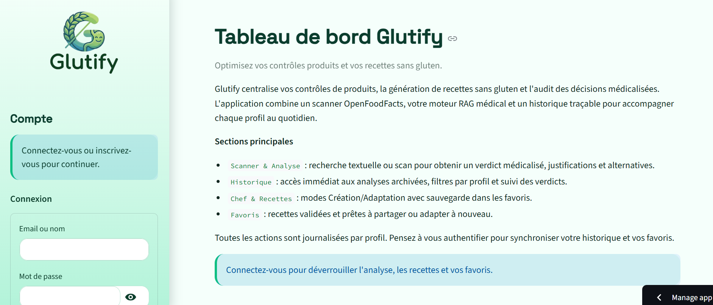
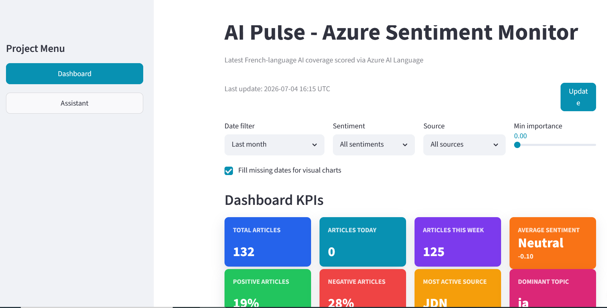

Data Scientist | Machine Learning Engineer | IA Générative
Data Scientist avec plus de 2 ans d’expérience dans la conception, l’optimisation
et l’industrialisation de modèles d’intelligence artificielle appliqués aux séries temporelles,
à la santé, au NLP et à l’analyse de données.
J’interviens sur tout le cycle projet : collecte et préparation des données, feature engineering,
modélisation, évaluation, monitoring, dashboards, automatisation de rapports et restitution aux équipes métier.
Basée à Marseille • Mobile France / Maroc • Ouverte aux postes Data Scientist, ML Engineer et Consultante Data/IA
Conception de modèles Machine Learning, Deep Learning, NLP et séries temporelles avec évaluation rigoureuse des performances.
Suivi d’expériences, monitoring de modèles, automatisation de rapports, APIs et bonnes pratiques MLOps.
Vulgarisation des résultats, création de dashboards, présentation d’insights et collaboration avec des profils techniques et non techniques.
Je recherche des opportunités en CDI, CDD ou mission longue en tant que Data Scientist, Machine Learning Engineer, Consultante Data/IA ou Data Analyst orientée IA, en France ou au Maroc.
INDIENOV | Marseille, France
Industrialisation de modèles de prévention santé et optimisation d’algorithmes prédictifs.
Stack : Python, SQL, MLflow, GitHub, Matplotlib, Seaborn, Machine Learning.
INDIENOV | Marseille, France
Deep Learning appliqué aux séries temporelles pour la mobilité des seniors — Projet HMS.
Stack : TensorFlow, Keras, Pandas, Scikit-learn, Deep Learning, Séries temporelles.
INDIENOV | Marseille, France
Pipeline Big Data et détection d’anomalies sur données temporelles.
Stack : Python, AWS S3, PCA, Clustering, Isolation Forest, Données temporelles.
UM6P | Ben Guerir, Maroc
Plateforme de e-réputation pour Autoroutes du Maroc via NLP.
Stack : Python, NLP, FastAPI, NoSQL, Angular, API REST.
Machine Learning, Deep Learning, TensorFlow, Keras, Scikit-learn, Transformers, fine-tuning, prompt engineering, NLP, séries temporelles, détection d’anomalies, clustering, PCA, Isolation Forest.
Python, SQL, FastAPI, Git, GitHub, Docker, MLflow, CI/CD, AWS S3, MongoDB, APIs REST, automatisation de workflows data.
Power BI, Grafana, Plotly, Matplotlib, Seaborn, dashboards temps réel, reporting analytique, restitution d’indicateurs métier.
Vulgarisation technique, esprit d’analyse, autonomie, capacité d’adaptation, gestion de projet Agile/Scrum, communication avec des équipes techniques et métier.


EILCO, France
ENSA, Maroc